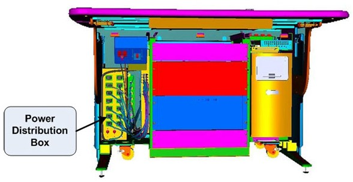
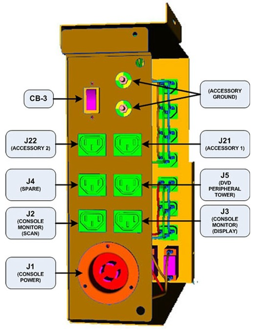

Operating Documentation
Direction 5321294, Rev# 3
GOC6 Service Methods
Operating Documentation |
| Last Revised: | 24 June 2008 |
The follow information will assist in confirming if the Operator Console is experiencing a power distribution hardware fault. The following checks should be sufficient in determining if the Power Distribution Box located inside the Operator Console ( Illustration 1) is suffering from hardware issues at the prescribe Field Replaceable Unit (FRU) level.
Illustration 1: Power Distribution Box Location

| ELECTROCUTION HAZARD | |
| CARE MUST BE TAKEN WHEN WORKING WITH THE POWER DISTRIBUTION AND INSIDE THE GOC 6 CONSOLE. | |
| USE PROPER LOCKOUT / TAGOUT PROCEDURES BEFORE REPLACING THE COMPONENTS. |
Before proceeding with the rest of this Troubleshooting Guide, use the following checklist to find possible solutions for general power up problems.
Is the System receiving power?
Is the Main System Disconnect enabled (i.e. A1 Panel or similar)?
Is the PDU power up?
Is the UPS operational (if equipped)?
Is the Console receiving power?
Has Circuit Breaker #7 (CB7) tripped on PDU?
Are the correct phases connected to the Operator Console at the PDU?
Is the Twist-N-Lock Power Cord securely fastened to the Operators Console Bulkhead Panel?
Are the Console Components receiving power?
Is the console power switch on and functioning?
Is the console Power Switch Assembly plugged into J23 on the Power Distribution Box?
Has Circuit Breaker #2 (CB2) tripped on Power Distribution Box?
| NOTE: | This Circuit Breaker also protects the Power-On Contactor Coil inside the Power Distribution Box. Only the two Accessory Outlets will remain on if CB2 trips. |
See Operator Console Circuit Breaker Table 1 below for more details.
Are only some of the Console Components receiving power?
Has Circuit Breaker #1 Tripped?
- Suspect power problems related to Recon Engine Computers (i.e. DIG, HSDA(s) or VeRB (if equipped).
- Possible failure of internal components of the Power Distribution Box (i.e. Line Filter).
Has Circuit Breaker #2 Tripped?
- Suspect power problems related to Host Computers (i.e. Host PC, Peripheral Tower(s) or Monitors.
- Possible failure of Power-On Contactor Coil or other internal components of the Power Distribution Box (i.e. Line Filter).
Has Circuit Breaker #3 Tripped?
- Suspect power problems related to Accessory plugged into these outlets.
Disconnect loads (power cords) from Power Distribution Box and reset Circuit Breaker(s).
Are Circuit Breaker(s) still tripping?
Yes
- Suspect component failure internal to Power Distribution Box.
- Replace Power Distribution Box (FRU).
Are Circuit Breaker(s) still tripping?
No
- Reconnect power cords in a systematic method to determine which console component is over loading the Circuit Breaker(s).
The Power Distribution Box (or Outlet Box) in the left compartment of the Operator Console is responsible for distributing AC Power to the components in the GOC6 Console. Incoming power from the Power Distribution Unit (PDU) of the CT System is two (2) phase 208 Vac. This incoming 2 phase AC power is routed through Line Filters and Circuit Breakers and then sent to numerous IEC power outlets in a load balanced manner.
| NOTE: | It is important that the console components be connected to specific power outlets on the Power Distribution Box to maintain proper power load balance. If components are not connected to their proper power outlets, a possible imbalance in power distribution may cause circuit breakers to trip when the console is powered on. |
| NOTE: | It is important to understand that the only method to completely remove power from the console is with the removal of the Twist-N-Lock Power Connector on the rear Console Bulkhead Panel. The Circuit Breakers on the Power Distribution Box and the Console Power Switch only switch different circuits in and out of the energized state. Power is still present in the Power Distribution Box with the Circuit Breakers and Console Power Switch turned off! |
The incoming two (2) phase 208 Vac power is split inside the Power Distribution Box into two (2) primary single phase 120Vac circuits. These circuits eventually supply 120 Vac power to all the computers and other components inside the operator console. Refer to GOC6 Oulet Box Schematic 5272833SCH for more details.
The Operator Console Power Switch energizes a three (3) Pole Contactor inside the Power Distribution Box, allowing 120 Vac power to be distributed through line filters and then onto the console components.
Primary electrical protection for the entire Operator Console is located on the Power Distribution Unit (PDU), Circuit Breaker #7 (CB7). All Circuit Breakers located at the Operator Console are for protecting specific subsections of the power distribution at the console.
| Circuit Breaker | Location | Purpose | Components |
|---|---|---|---|
| CB 1 | Inside console on Power Distribution Box | To protect components plugged into the internal AC Power IEC outlets on Power Distribution Box. (J12 – J19) | Recon Engine Subsection |
| DIG, VeRB, HSDA 1 & 2, Video Amp, and Spare | |||
| CB 2 | Inside console on Power Distribution Box | To protect components plugged into the internal and external AC Power IEC outlets on Power Distribution Box. (J2 – J11) | Host Subsection |
| Note: Also protects the console power-on switch contactor’s coil. If contactor fails J2- J19 will be de-energized. | Host PC, CNS, Console Monitors, Scan Room Monitor, Peripheral Towers, MODEM, ICOM and Console Chassis Fans | ||
| CB 3 | Outside console on Power Distribution Box at Rear Bulkhead Connection Panel | To protect Accessories plugged into the external AC Power IEC outlets on Bulkhead Panel. (J21 – J22) | Accessories |
| Ex: RPM, Injector |
Illustration 2: Power Distribution Box Connections and Circuit Breaker Locations: Internal to Operator Console

Illustration 3: Power Distribution Box Connections and Circuit Breaker Locations: External to Operator Console

| THE ACCESSORY POWER OUTLETS ARE ONLY TO BE USED FOR GE HEALTHCARE APPROVED ACCESSORIES! | |